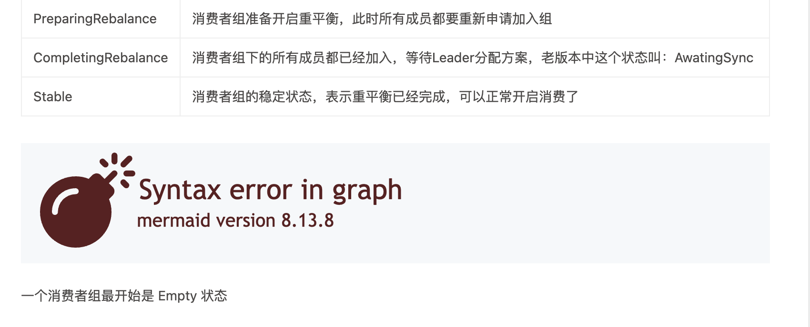
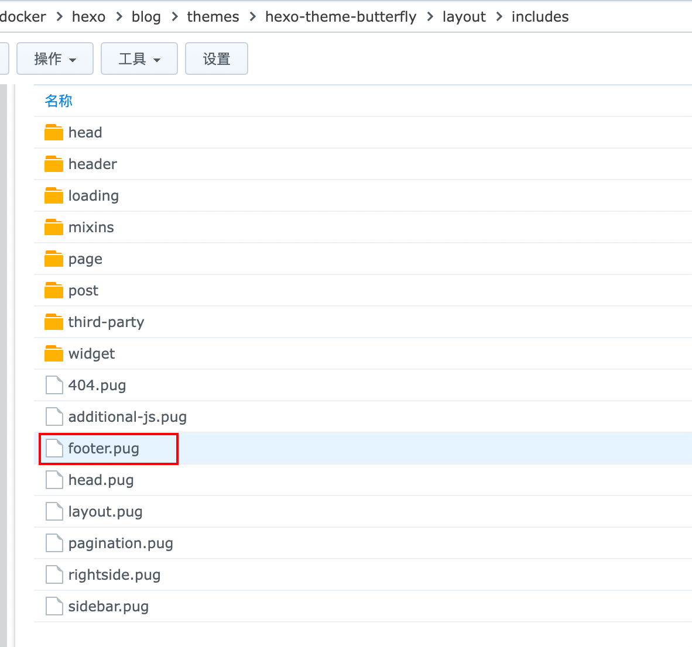
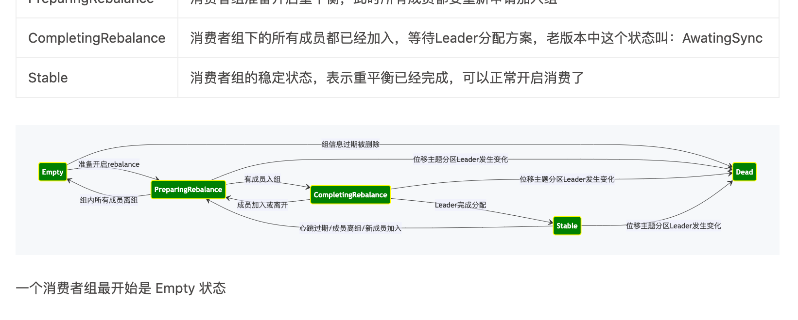

hexo+butterfly更新mermaid版本
hexo+butterfly更新mermaid版本
怎么使用的mermaid，可以参考butterfly的官网：https://butterfly.js.org/posts/4aa8abbe/#mermaid
最近在本地重新编辑一篇文章之后，部署起来，发现有一个mermaid图表不支持了。
原因是因为：我的 hexo 引用的 butterfly 主题默认使用的 mermaid 版本是 8.13.8
而我本地是使用 typora 编辑的，typora 版本是 1.5.8，引用的 mermaid 版本是 9.2.0
所以我是用了 新版本的特性之后，在低版本中就无法渲染了。
解决办法
更新 hexo+butterfly 的 mermaid 版本
mermaid 版本是主题引入的，其实就是主题引入了一个js
我们找到这个 js ，给它升级了就完事了
找到主题目录
…/你的主题目录/hexo-theme-butterfly/layout/includes/footer.pug
打开footer.pug文件，将引入的低版本mermaid直接升级就可以了
然后重新部署一遍就可以了。
